AI, data, and quant decision systems
Targeting data scientist, AI engineer, and quant engineering roles where models need production judgment.
AI systems / quant tooling / data products
Data scientist and quantitative systems builder focused on agentic analytics, privacy-safe workflows, and financial engineering tools that turn ambiguous data into reviewable decisions.
APAC correlation analytics optimization
CV extraction accuracy on sanitized samples
Semantic caching for lower-cost LLM pipelines
Proof before polish
The portfolio now leads with the work that matters most: AI workflows with audit trails, quant tools with measurable speedups, and public-safe reports that show how the systems fit together.
Targeting data scientist, AI engineer, and quant engineering roles where models need production judgment.
Speedups, extraction accuracy, leakage-aware evaluation, and public-safe reports with limitations stated.
Multi-agent workflow for natural-language SQL, statistical review, charting, and human checkpoints.
Read case studyReduced APAC correlation analytics runtime from 6.09 seconds through workflow and computation optimization.
Built automated questionnaire extraction for medical PDF/image workflows with reviewable output boundaries.
Project-scoped sanitized evaluation sample.Designed Transformer, LangChain, and FAISS-backed caching paths for structured extraction and retrieval.
Visual evidence
Major case studies now pair written method notes with owned diagrams, slide-derived artifacts, short muted demos, and licensed research references where reuse is clear.
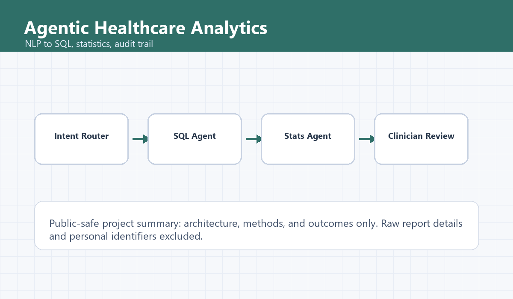
Agent workflowHero visual, architecture diagram, HITL flow, ReAct/Reflexion research cards, and demo clip.
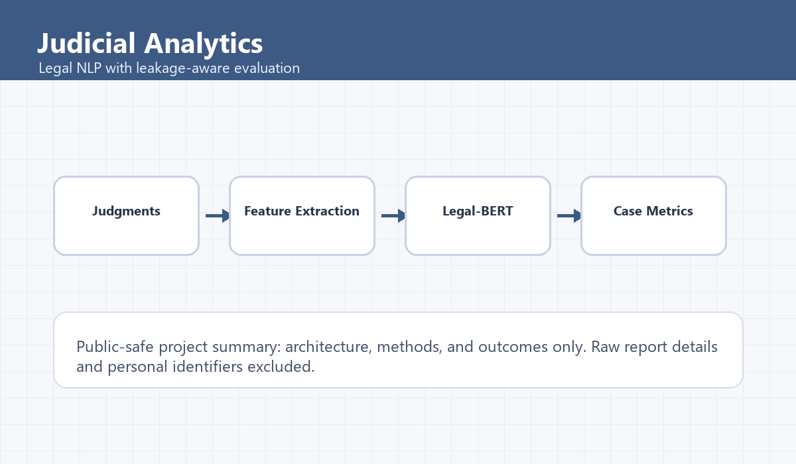
Evaluation designExtraction architecture, HAN diagram, model-results artifact, leakage walkthrough, and field note.
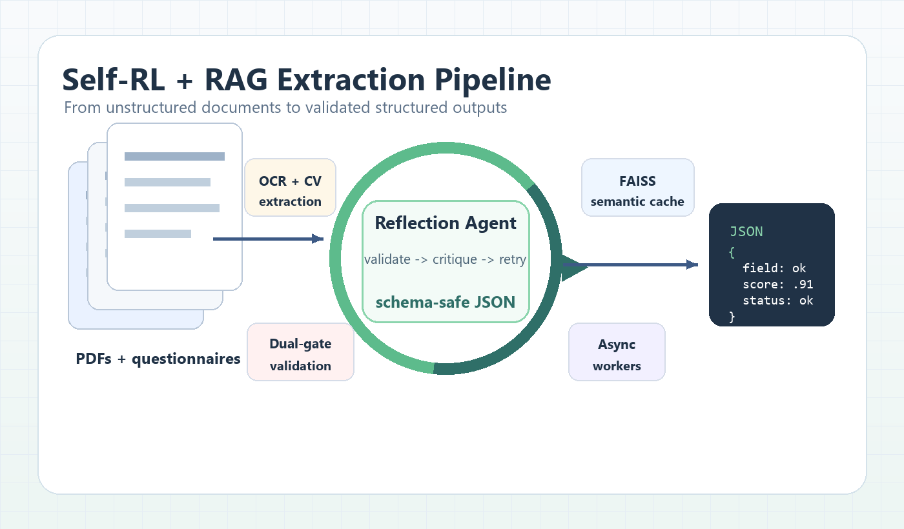
Systems costSemantic-cache evidence, Reflexion/ReAct paper cards, and a short cache decision demo.
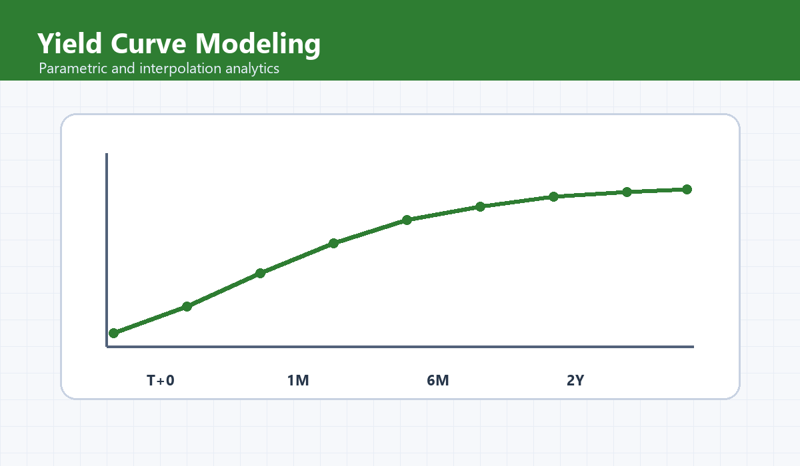
Quant toolingCurve artifact, IBKR architecture visual, assumptions-to-risk demo, and conservative deployment boundary.
French NLP, API extraction, PII-safe text processing, topic detection, and portfolio-safe RAG/CV evidence.
Yield curves, derivatives tooling, Bloomberg/LSEG integrations, and APAC analytics runtime improvement from 6.09s to 0.86s.
Business analytics, programming, econometrics, financial risk, client operations, and medical operations experience.
Featured Experience
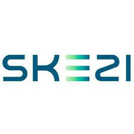
SKEZI
Data Scientist Intern
French NLP, API extraction, PII-safe processing, and topic detection
Jul 25 - Current
Paris, France
Tradition Energy
Quantitative Developer Intern
Financial derivatives analytics and quantitative tooling
May 24 - Aug 24
May 25 - Jul 25
Singapore
Earlier Experience
Military Medical Institute
Medical Technician
Singapore Armed Forces medical operations and patient-record discipline
Jul 21 - Aug 23
Singapore
Tradition Energy Singapore
Middle Office Analyst Intern
Client onboarding, trade operations, and cross-office coordination
Sep 20 - May 21
Singapore
National University of Singapore
School of Computing
BSc. in Business Analytics (Computing)
Relevant Coursework
Aug 23 - Jun 26
Singapore
Korea University
International Winter Campus
Participated in Korea University's Winter Campus academic and cultural immersion programme. Gained a strong foundation in core accounting principles and applied them to real-world business scenarios, demonstrating the ability to classify transactions and determine appropriate accounting treatments.
Relevant Coursework
Dec 24 - Jan 25
South Korea
PSL University (Paris)
Venture Creation (Entrepreneurship & Business)
Participated in an intensive venture creation program focused on starting a business and entrepreneurship. Co-created an AI wardrobe styling app and collaborated with a diverse team to validate the business model.
Jul 24 - Dec 24
Paris, France
Temasek Polytechnic
School of Business
Accountancy & Finance (Finance specialisation)
Relevant Coursework
Apr 18 - May 21
Singapore
Public-safe summaries structured for fast review: problem, build, evidence boundary, stack, and deeper case-study notes.
Project Browser
Clinical and research users need auditable healthcare data workflows.
Multi-agent analytics workflow with routing, SQL, statistics, charts, and human review.
Sanitized capstone-backed summary with private data excluded.
Review SQL trace quality, answer usefulness, and human approval boundaries before production.
Public version excludes private data and does not claim clinical deployment.
Evidence Index
A compact view of domain, implementation signal, stack, and public evidence boundaries.
Multi-agent analytics workflow for natural-language SQL, schema grounding, statistical review, chart generation, and human-in-the-loop auditability.
LangGraph, SQL, DuckDB, OMOP CDM, ClinicalBERT, FAISS, Responsible AI.
Case studyLeakage-aware legal NLP pipeline that converts lengthy judgments into structured case-level features and evaluation-ready records.
Legal-BERT, XGBoost, HAN, JSON QA, target-leakage audits, feature engineering.
Case studyRAG extraction architecture with Transformers, LangChain, FAISS caching, OCR review, and iterative self-reflection loops for structured output quality.
Python, reinforcement learning, RAG, LLMs, FAISS, asyncio.
Technical noteAutomated trading prototype with Interactive Brokers connectivity, order lifecycle handling, backtesting, risk controls, and walk-forward optimization.
Python, IBKR API, backtesting, pandas, NumPy, threading.
RepositorySmart-contract rental deposit workflow covering escrow state transitions, ERC-20 deposits, dispute escalation, verifier logic, and frontend-contract integration.
Smart contracts, ERC-20, MetaMask, IPFS concepts, mechanism design.
Case studyFood-tech venture work spanning sustainable supply-chain planning, business analytics, product positioning, and web presence for customer acquisition.
Entrepreneurship, supply chain, web development, analytics, sustainability.
WebsiteEnd-to-end credit-risk workflow covering ETL, feature engineering, model comparison, calibration, explainability, and business-facing risk communication.
Python, PySpark, Apache Spark, Tableau, MySQL, ETL pipelines.
Case studyFull-stack event discovery application with mapping, geolocation, event persistence, filtering, authentication, and crowd analytics boundaries.
JavaScript, Google Maps API, Bootstrap, MySQL, REST APIs, geospatial data.
Public summary onlyResponsive full-stack platform for appointment booking, resource management, role-based access control, and caregiver-family communication flows.
Full-stack development, MySQL, Bootstrap, REST APIs, UX design.
Public summary onlyQuantitative toolkit for bond pricing, yield curve construction, duration, convexity, scenario analysis, and spreadsheet-assisted fixed-income workflows.
Python, NumPy, SciPy, VBA, fixed income, quantitative finance.
Quant noteInteractive options analytics dashboard covering Black-Scholes pricing, Greeks, volatility sensitivity, payoff visualization, and scenario testing.
Python, pandas, NumPy, Streamlit, Plotly, stochastic calculus, options theory.
Public summary only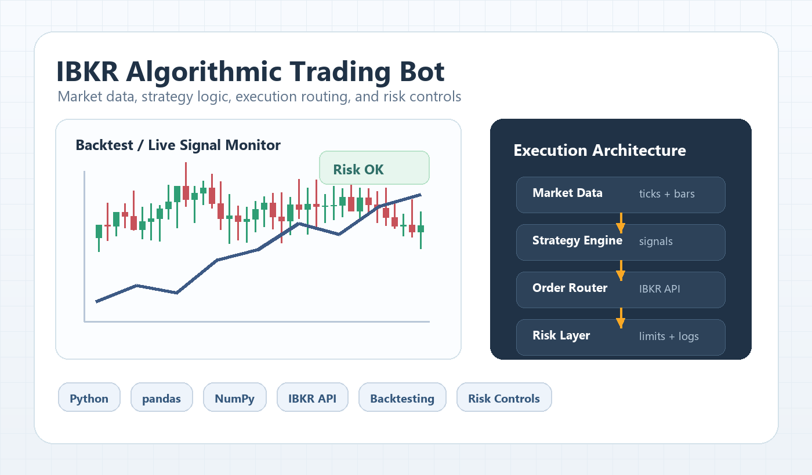
Links: GitHub
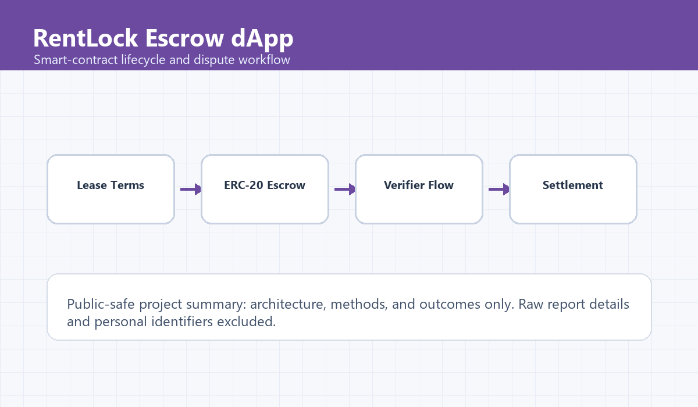
Links: Website
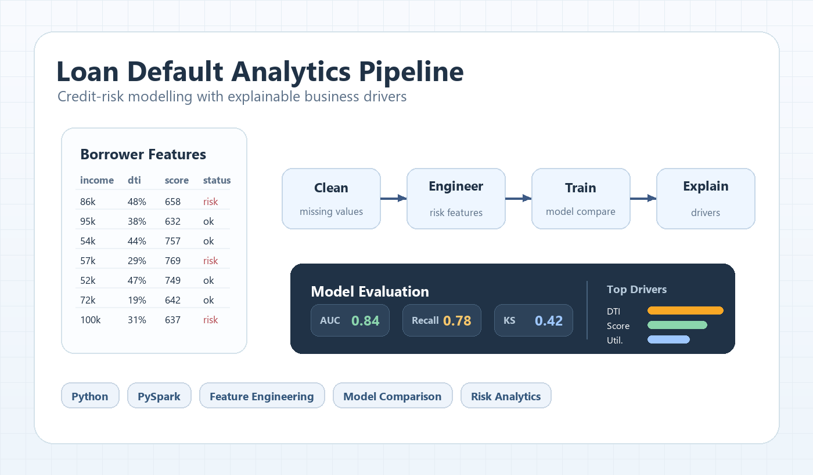
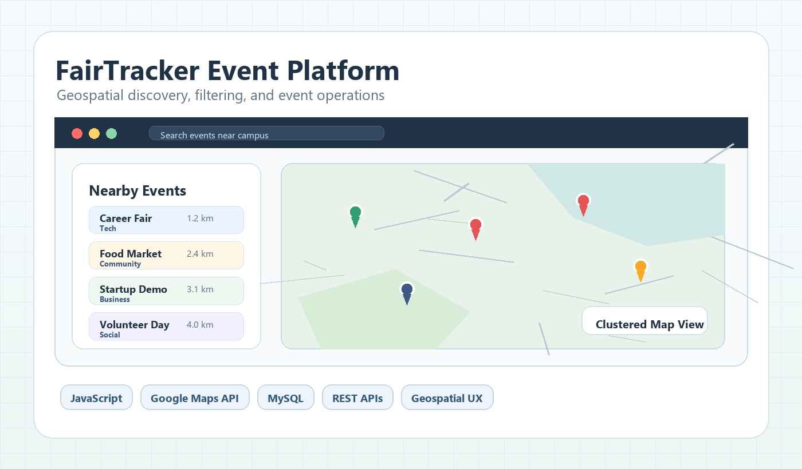
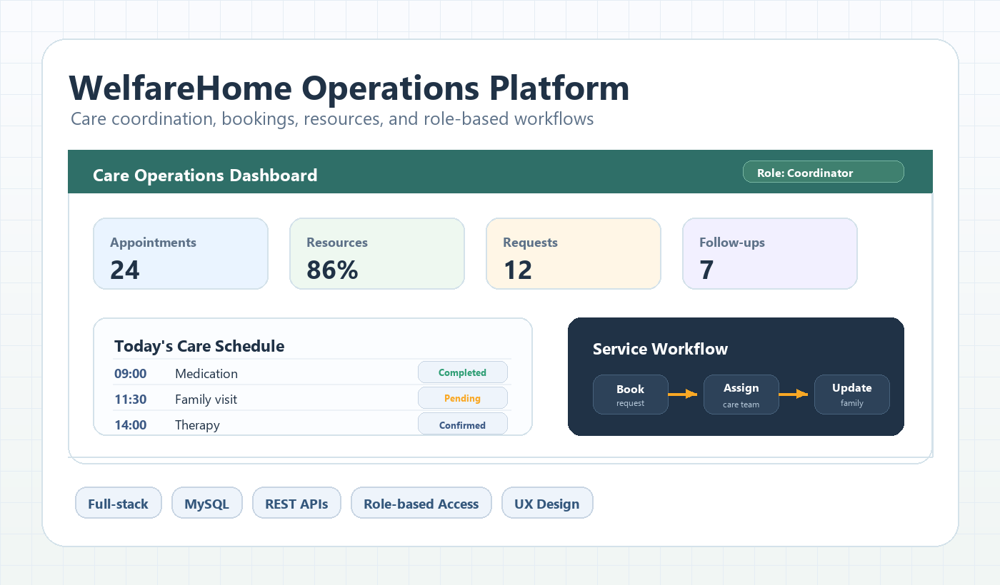
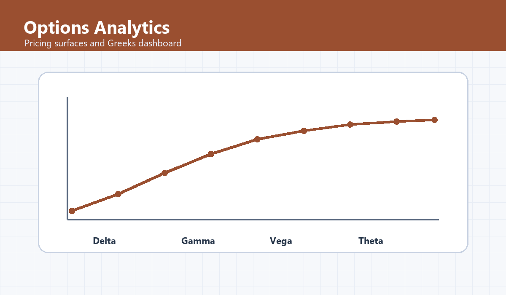
"Tony demonstrated a deep understanding of quantitative finance topics including bonds, mean-variance analysis, forwards, futures, and options, and connected classroom theory with practical quantitative development."
Quantitative Finance Lecturer
Academic Testimonial
National University of Singapore
"Tony contributed meaningfully from requirements gathering and design through prototype development, bringing a thoughtful, structured approach to a complex real-world analytical problem."
Healthcare Analytics Supervisor
Capstone Testimonial
Clinical Research Collaboration
"Tony laid the groundwork for an AI chatbot project by building a foundational RAG pipeline and an automated data-collection workflow, delivering practical and reliable contributions to AI development."
AI Internship Supervisor
Recommendation Letter
Paris AI Startup
I read across markets, geopolitics, behavioral science, AI systems, and history to sharpen how I think about incentives, risk, institutional change, and decision-making under uncertainty.
Bookshelf

Henry Kissinger
A long-view study of statecraft, strategic patience, negotiation posture, and how historical memory shapes institutional decision-making.
Public-safe technical notes, case studies, and research-style papers written for recruiters, senior data scientists, and AI engineers.
Implementation lessons on retrieval, caching, latency, cost, and guardrails.
Sanitized reports that show problem framing, architecture, trade-offs, and evidence boundaries.
Structured writeups with abstract, method, evaluation design, limitations, and next steps.
Project Case Study • 2026 • AI Architecture
Agent routing, schema grounding, SQL traceability, human review gates, data boundaries, evaluation assumptions, and deployment risks.
Research-Style Paper • 2026 • Evaluation Design
Temporal splits, label leakage risks, Legal-BERT baselines, structured extraction checks, case-level assumptions, and limits.
Technical Note • 2026 • Retrieval Systems
Semantic cache design, cache hit thresholds, stale-answer risks, observability, fallback behavior, and production measurements.
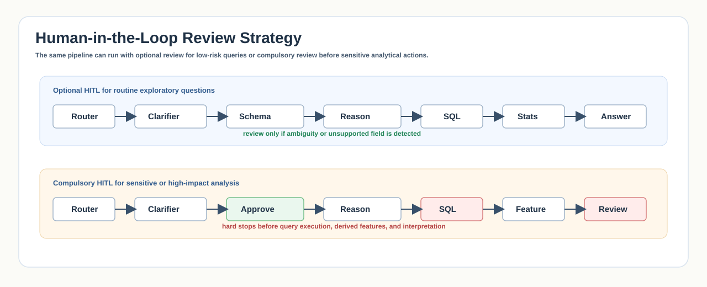
Technical Note • 2026 • Responsible AI
Review queues, confidence thresholds, audit trails, privacy controls, escalation paths, and failure handling for sensitive workflows.
Research-Style Paper • 2026 • Quant Engineering
Yield curve assumptions, pricing modules, risk metrics, scenario analysis, backtesting boundaries, and trading-tool deployment notes.
CFA Institute
Finance credential and training
National University of Singapore
Aug 2023
National University of Singapore
Recognized exchange and sustainability initiative
Loading Portfolio...
Preparing a few systems-thinking notes...